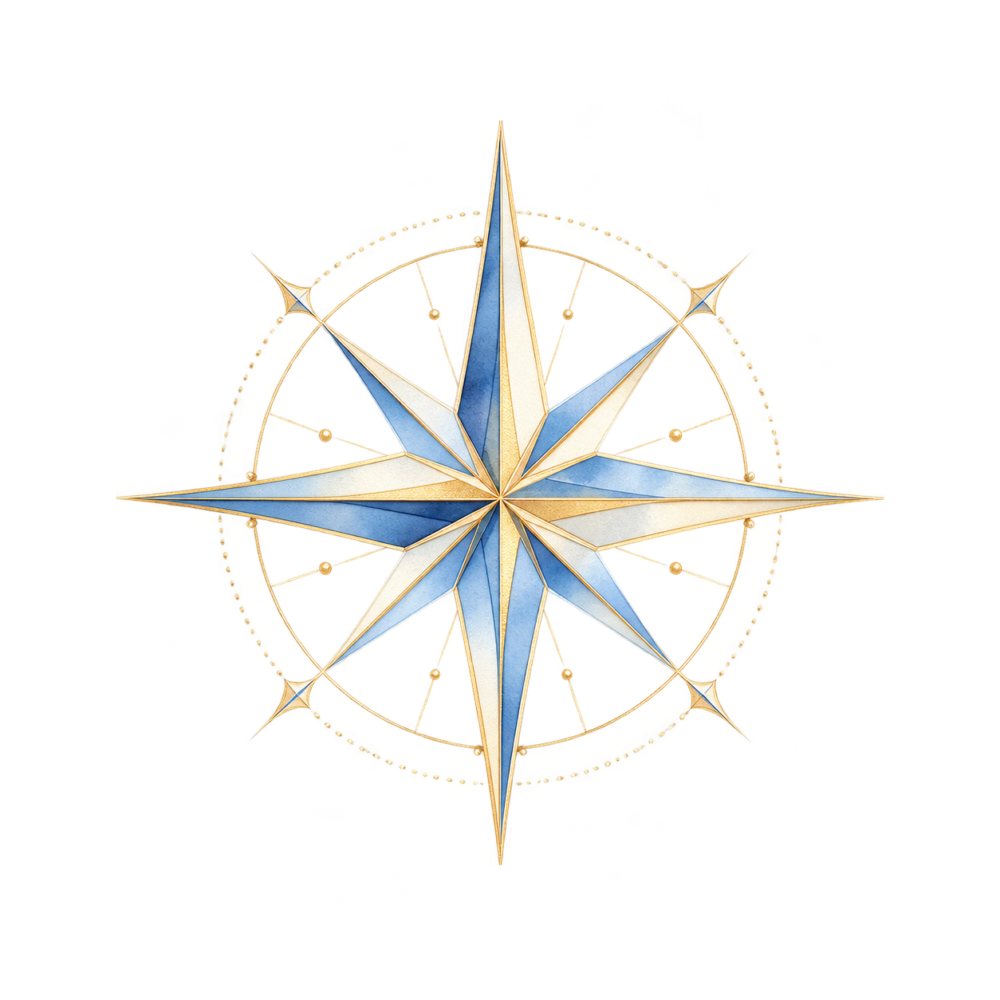

Painted
The first painted file. Lace, small points, and a ring of ornament.
 DeskPhoneDeskPhone
DeskPhoneDeskPhone
Same drawing, larger, so the detail that disappears in the circle is visible.
The painted rose turns muddy inside the glass circle. These sit at that size, on the ice sky and on the night sea.
The first painted file. Lace, small points, and a ring of ornament.
DeskPhoneDeskPhone
Same drawing, larger, so the detail that disappears in the circle is visible.
The painted compass, with the diamonds and beads past the four long tips cut off.

DeskThe lace and the eight points stay. Only the ornaments beyond the long tips are gone.
Eight points, gold edges, blue and ivory on the long arms.
 DeskPhoneDeskPhone
DeskPhoneDeskPhone
Same drawing, larger, so the gold lines that disappear in the circle stay visible.
Eight points. Blue and ivory on the long arms, gold on the short ones.
Eight points and nothing around them. The ring and the lace are both gone.
The new file. Eight points, with a gold finial on each long arm.
 DeskPhoneDeskPhone
DeskPhoneDeskPhone
Same drawing, larger, so the finials stay visible in the circle.